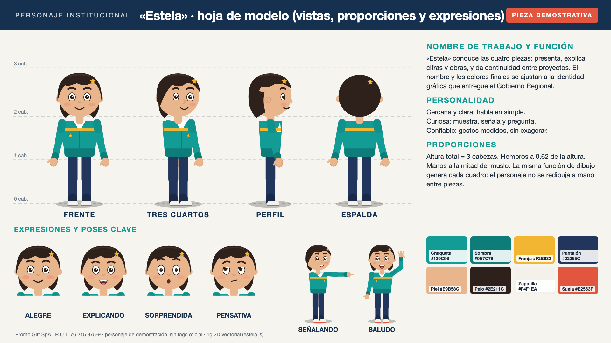
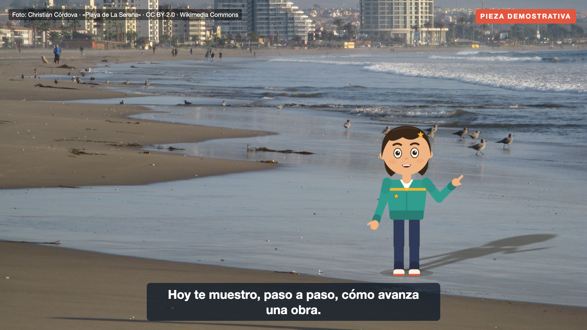
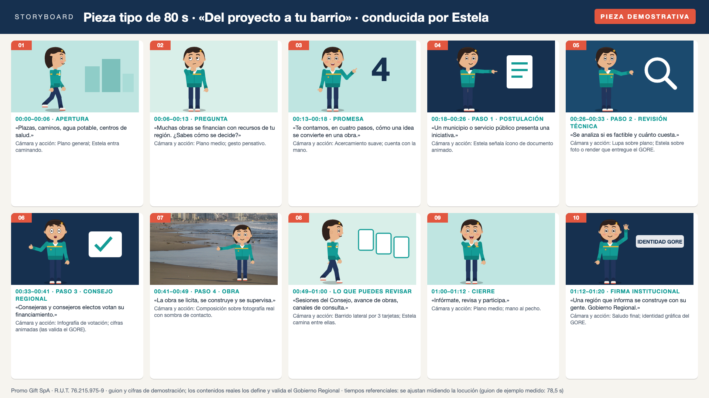

Muestra 1 · 22 s · 1920×1080 · H.264 · locución y subtítulos
Prueba breve de animación del personaje «Estela»
Camina, gira, saluda, señala una cifra animada, cambia de expresión y habla con sincronía labial (bocas por fonema generadas desde la locución). Incluye 3,8 s compuestos sobre una fotografía real de La Serena con sombra proyectada. Mezcla normalizada a −16 LUFS. Locución sintética en español (Kokoro-82M, licencia Apache-2.0).
Muestra 2 · 7 s
Actuación de referencia → personaje
A la izquierda, un video de referencia de terceros con licencia CC0 (rostro difuminado) y los puntos de pose detectados; a la derecha, el mismo movimiento transferido al rig del personaje, cuadro a cuadro.
Muestra 3
Hoja de modelo: vistas, proporciones, expresiones y paleta

Muestra 4
Personaje integrado sobre fotografía real

Muestra 5
Storyboard de una pieza tipo de 80 s

Créditos y licencias de los recursos de terceros
| Recurso | Autor y fuente | Licencia |
|---|---|---|
| Fotografía «Playa de La Serena» | Christian Córdova · Wikimedia Commons | CC BY 2.0 |
| Video de referencia «Bicycle in Ghanaian sign language interpretation» (7 s) | Uprising Man · Wikimedia Commons | CC0 |
| Voz sintética | Kokoro-82M (hexgrad) | Apache-2.0 |
| Sincronía labial | Rhubarb Lip Sync 1.13.0 | MIT |
| Detección de pose | MediaPipe Pose Landmarker | Apache-2.0 |
| Personaje, rig, animación, música y montaje | Promo Gift SpA | producción propia |